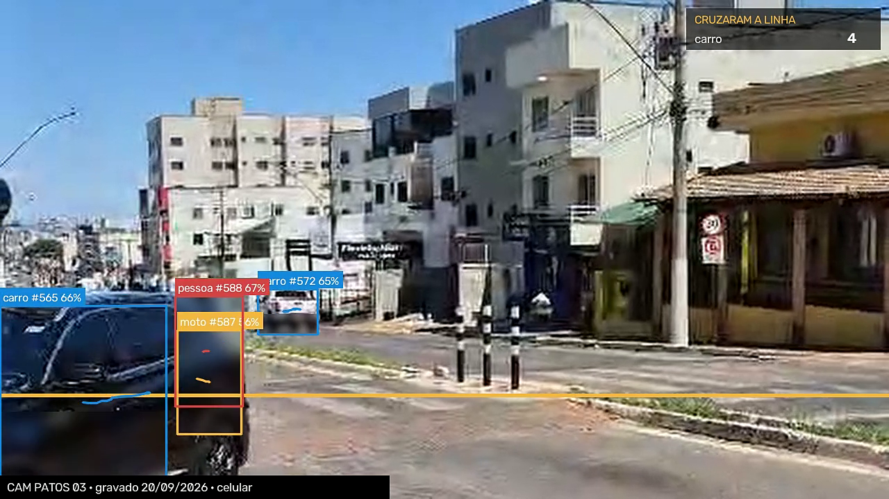

Dois celulares, uma tarde.
A câmera do poste faz isso o dia inteiro.

MEDIDO
Filmado do alto — 6 automóveis, 2 ônibus, 1 pedestre em 59 s · leitura da máquina, ainda não conferida à mão
5-motor/patos-real/maximo/patos-6.jsonl

MEDIDO
Vídeo 3 — 4 automóveis, 1 moto, 1 pedestre em 42 s · uma pessoa contando à mão: 4 carros e 1 moto
5-motor/patos-real/maximo/patos-3.jsonl
1
Diagnóstico — 1h de vídeo
2
Piloto de 90 dias, um corredor
3
Assinatura por câmera lida
Só cobra mais quando o número anterior provou.
Ainda em aberto: acesso às câmeras e o valor final da assinatura.